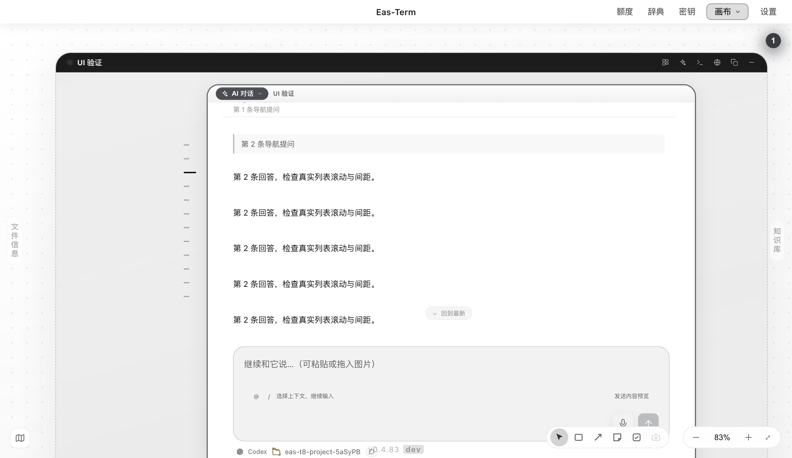

EAS-TERM · 2026-09-07
侧边导航同步，Codex 完成后直接续发
23Electron 交互检查通过
2,546全量通过 · 1 跳过
3 轮真实 CLI 回环续聊通过
| 问题 | 原因与修复 |
|---|
| 移动画布时侧边条落后 | 浮层在模块位置提交前排队测量，最多落后两帧。改为观察已提交的位置样式，在绘制前同步；连续平移缩放保持 12px 间距。 |
| Codex 回复后仍拦住发送 | 一次性进程仍在收尾，被误当成可写 stdin。完成后正确 restart/resume，旧进程迟到事件不再覆盖新轮次。 |
| 启动失败后重试 | 同步失败复位状态、返回失败恢复草稿，下次可以直接重试。生成中的快捷键与停止按钮状态一致。 |
真实界面

验证范围
真实 Electron renderer；UI 回归的安装、认证、发送和模型事件使用隔离夹具。另用本机 Codex CLI 接回环模拟 Responses 服务验证三轮上下文与只读沙箱，未调用真实外网模型。
软件操作规则已持久化：优先使用可用且适合任务的 MCP。本轮没有使用 Computer Use。
验证说明 · 交互与逐次位置记录 · CLI 三轮记录